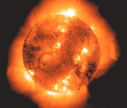
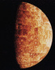
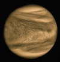
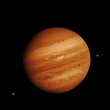
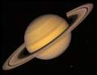
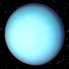
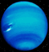
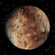

| UNIVERSO | ||
|---|---|---|
| PLANETAS | NOMBRE | DATOS |
|  | SOL | Diametro: 1.390.000 km. |
| Distancia al Sol: 0 Km. | ||
| Tiempo rotacion: Sin Rotacion | ||
|  | MERCURIO | Diametro: 4.878 km. |
| Distancia al Sol: 58 millones de km. | ||
| Tiempo rotacion: equivale a 58 días y 16 horas terrestres. | ||
|  | VENUS | Diametro: 12.100 km. |
| Distancia al Sol: 108 millones de km. | ||
| Tiempo rotacion: equivale a 243 días terrestres. | ||
| TIERRA | Diametro: 12.756 km. | |
| Distancia al Sol: 150 millones de km. | ||
| Tiempo rotacion: 23 horas, 56 minutos y 4 segundos. | ||
| MARTE | Diametro: 6.786 km. | |
| Distancia al Sol: 228 millones de km. | ||
| Tiempo rotacion: equivale a 24 horas y 37 minutos terrestres. | ||
|  | JUPITER | Diametro: 143.200 km. |
| Distancia al Sol: 778 millones de km. | ||
| Tiempo rotacion: equivale a 9 horas y 55 minutos terrestres. | ||
|  | SATURNO | Diametro: 120.536 km. |
| Distancia al Sol: 1.429 millones de km. | ||
| Tiempo rotacion: equivale a 10 horas y 40 minutos terrestres. | ||
|  | URANO | Diametro: 51.118 km. |
| Distancia al Sol: 2.870 millones de km. | ||
| Tiempo rotacion: equivale a 17 horas y 14 minutos terrestres. | ||
|  | NEPTUNO | Diametro: 49.528 km. |
| Distancia al Sol: 4.501 millones de km. | ||
| Tiempo rotacion: equivale a 16 horas y 7 minutos terrestres. | ||
|  | PLUTON | Diametro: 2.400 km |
| Distancia al Sol: 5.900 millones de km. | ||
| Tiempo rotacion: equivale a 6 días y 9 horas terrestres. | ||